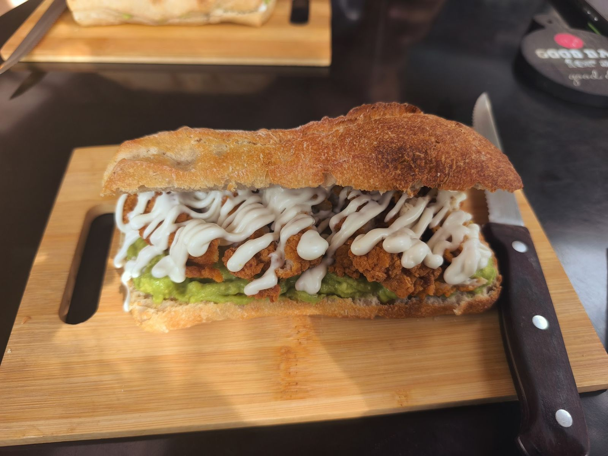
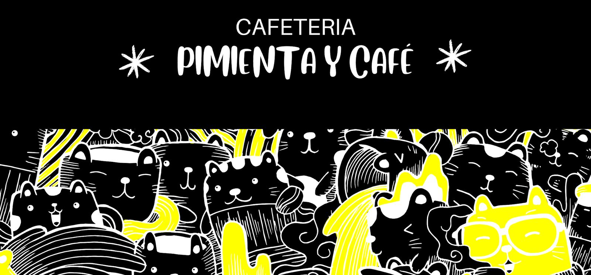
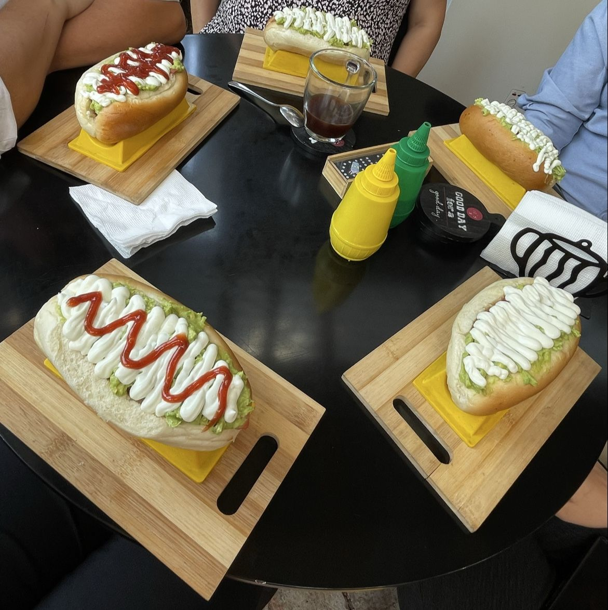
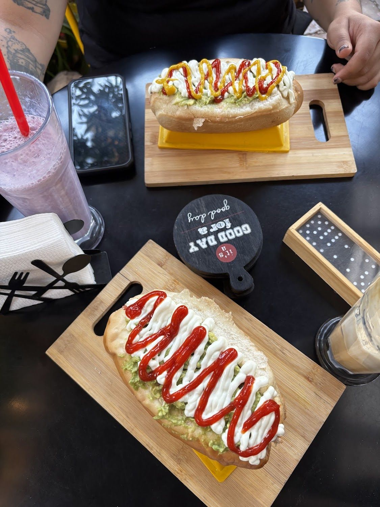

El pollo crispy
“Prueben el sándwich de Ave Palta con pollo crispy en ciabatta, no se arrepentirán”, dice una Local Guide.
Ver la carta →Apolo 5804 · Conchalí
Sándwich de pollo crispy en ciabatta, completos con pancito casero, mocachino de Nutella y jugos naturales. Con opciones vegetarianas.
07:30–15:30 y 18:00–21:00 · sábado y domingo cerrado

De lunes a viernes. Sábado y domingo cerrado.
“Prueben el sándwich de Ave Palta con pollo crispy en ciabatta, no se arrepentirán”, dice una Local Guide.
Ver la carta →“Muy buenos completos con pancito casero. El ambiente es piola, buena música.”
Leer reseñas →El dueño responde todas las reseñas, una por una. “¡Te esperamos pronto nuevamente!”
Ver la ficha →Nosotros
Mesas negras, tablas de madera y mucho amarillo.

El letrero del local es blanco sobre negro, y debajo lleva una franja de gatos dibujados en amarillo. Ese amarillo limón es el que se repite en todo lo demás: las tablas en que sirven, las botellas de salsa, los posavasos.
Esta página usa exactamente esos dos colores, muestreados de esa foto. Nada inventado.

“Muy buenos completos con pancito casero. El ambiente es piola, buena música y además cuentan con opciones vegetarianas, lo que se agradece siempre.” C M, en Google
Y otra clienta, hace seis días: “el espacio es cómodo y tranquilo para comerse cualquier cosa ya que todo es bueno”.
Ver todo lo que hay →
Todas las fotos son del propio local, de su ficha de Google Maps.
Carta
Todo esto está nombrado textualmente en sus reseñas o se ve en sus fotos.
Productos confirmados en sus reseñas de Google y en sus propias fotos.
Reseñas
Las doce son de cinco estrellas. Copiadas tal cual de su ficha.
★★★★★
Todo muy rico, un chocolate caliente exquisito espesito y el mocachino de Nutella lo mejor! Prueben el sándwich de Ave Palta con pollo crispy en ciabatta, no se arrepentirán
Respuesta del local¡Muchas gracias! 😊 Qué bueno saber que disfrutaste la comida, el café y la atención. ¡Te esperamos pronto nuevamente!
★★★★★
muy buenos completos con pancito casero 🙏🏼 el ambiente es piola, buena música y además cuentan con opciones vegetarianas, lo que se agradece siempre. Tanto el café como los batidos están bien preparados.
Respuesta del localMuchas gracias 😁. Los esperamos nuevamente.
★★★★★
10/10 la verdad muy amables, el espacio es cómodo y tranquilo para comerse cualquier cosa ya que todo es bueno, sus jugos naturales un 20/10 ⭐️⭐️⭐️⭐️⭐️
Redes
Sólo lo verificado. Ningún perfil inventado.
Por acá se piden los retiros en la puerta y el delivery.
Contestan todas las reseñas, una por una.
Visítanos
Apolo 5804
Conchalí, Región Metropolitana
Plus Code J8G4+7H
07:30–15:30 y 18:00–21:00
Cerramos entre las 15:30 y las 18:00. Según su ficha de Google, consultada el 15-09-2026.
Servicios declarados en su ficha de Google. Los tres se coordinan por WhatsApp.